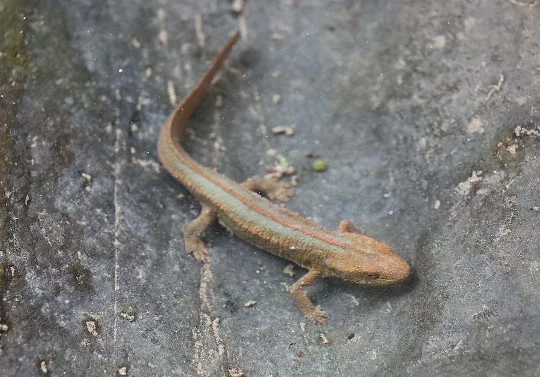

两栖动物 · 动物界
尾斑瘰螈 Paramesotriton caudopunctatus

中国南方的瘰螈，身体深褐色，尾部散布醒目的浅色斑点，栖息于山溪和池塘，皮肤可分泌刺激性毒素。
- 分类
- 门脊索动物门纲两栖纲目有尾目科蝾螈科属瘰螈属
- 栖息环境
- 山地溪流、水塘和潮湿的落叶层
- 地理分布
- 中国湖南、广西、贵州等地
- 保护级别
- IUCN 近危（NT）；中国“三有”保护动物
物种志
尾斑瘰螈体长 12–16 厘米，身体粗壮，皮肤粗糙，背面呈深褐色或黑褐色，背脊两侧各有一列疣粒，尾部散布浅黄色或橙色的斑点，因此得名；腹部橙红色或黄褐色，带深色斑块，四肢短粗，尾侧扁。
它分布于中国湖南、广西、贵州等地的山地，栖息于海拔较高的溪流、水塘和潮湿的落叶层中，白天藏在石缝、树根和土洞中，夜间捕食昆虫、蠕虫、螺类和小型节肢动物。繁殖期在 3–6 月，雌螈把卵产在水草或石下，幼虫有外鳃，在水中生活数月。尾斑瘰螈的皮肤腺体能分泌刺激性毒素，接触后会引起皮肤红肿，观察时不要用手直接抓握；它因栖息地破坏和捕捉而数量下降，中国将其列入“三有”名录。
形态与习性
- 食性昆虫、蠕虫、螺类和小型节肢动物
- 体长约 12–16 cm
- 繁殖3–6 月在水草或石下产卵，幼虫有外鳃
- 活动节律夜行性，白天藏在石缝和树根下
- 毒性皮肤分泌刺激性毒素，接触后需洗手
- 识别尾部散布浅色斑点，腹部橙红色
趣味知识
- 尾斑瘰螈的尾部点缀着浅色斑点，是它区别于近缘种的特征。
- 它的皮肤分泌物会刺激皮肤，观察时最好只用眼睛看。
- 尾斑瘰螈生活在山溪附近，对水质和森林覆盖变化很敏感。